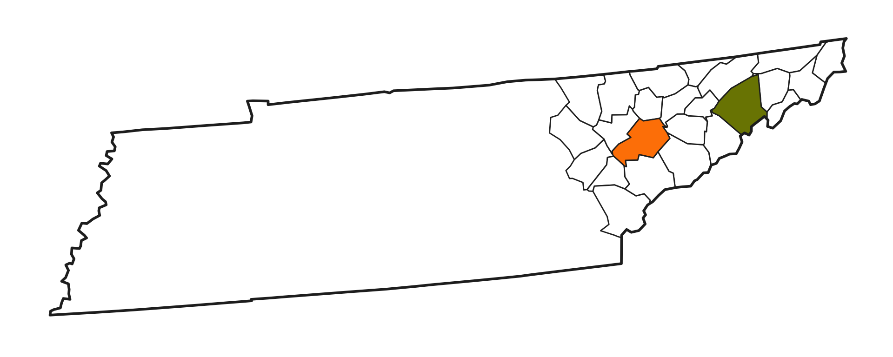
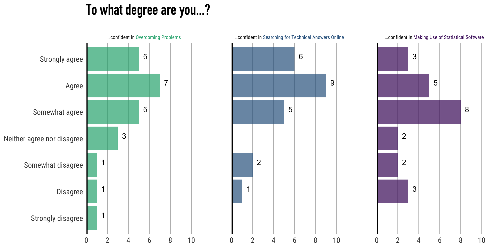

Week 1 - STEM 691
Course Introduction
Welcome!
Start Recording
Today’s Agenda
- Syllabus review
- Canvas review
- Norms
- Introductions
- Pre-work
- Tutorial / discussion review
.Qmd- Cairo (2013) discussion/ Miro activity
- Looking ahead
Syllabus Review
- Syllabus is available on Canvas.
- Living document: may be updated throughout the semester.
- If there is a discrepancy between the syllabus and Canvas, Canvas takes precedence.
- Slack us to let us know of any discrepancies, please!
Canvas Review
- Canvas = Primary platform for this course.
- All materials you need will be posted here.
- “Module” page is home base.
- If an item is missing, please let us know.
Getting Help
- Many ways to get help:
- Class Slack (eddatascienceatutk.slack.com)
- Ping Pong AI, ChatGPT, etc. (see syllabus for policy)
Norms
| In person norms | And also, for online learning… |
|---|---|
| Be fully present to each other & the work. | Keep your video on when possible. In large groups, mute your microphone when not talking. Close/mute/minimize other apps and devices to avoid distraction. |
| Assume positive intent & also take responsibility for the impact you have. | Remember online interaction masks even more of the full story. Notice when you are making assumptions, and seek information to check them. |
| Embrace collaboration. | Use the gallery view so you can see everyone. Use breakout groups as an opportunity to collaborate. |
| Be open to learning and accept non-closure. | Expect the inevitable technical glitches and learning curves. Exercise patience with one another. |
| Be aware of when to step up and step back. When stepping back, do so as an active listener. | Try out different modes of participation. Step back by making space for others to engage in these. |
| Land your plane–get to the point you intended. | We all know how hard it is to be talked at, especially in a Zoom session, so let’s keep it to a minimum. |
Introductions
Kelly’s Introduction
- Assistant Professor of Educational Data Science
- Completed Ph.D. at Stanford University
- Originally from Greene Co, TN
- Research interests:
- how space shapes learning opportunity
- rural education
- teacher learning
- data science

Zhen’s Introduction
- Postdoctoral Research Associate, Community Engaged Disciplinary and Educational Researchers in STEM (CEDERS) Program, TPTE
- Experience:
- Ph.D. in Educational Technology, University of Florida; minor in Research and Evaluation Methodology (quantitative research methods)
- Postdoctoral Research Associate, University of North Carolina at Chapel Hill
- Research interests:
- Educational game design
- Spatial cognition in STEM learning
- Data science education
- Socioscientific issue-based science teaching and learning
- Educational game design
Your Introductions
- Name
- Program
- Research interests
- Something you did/learned over break
- fun
- interesting
- restful
Today’s Work
Pre-Course Surveys—Recap

Pre-Course Surveys—Recap

Fun Things From Discussion
- A Marathoner
- A Newlywed
- Athletes
- Soccer
- Pickleball
- Dog enthusiasts
- Hobbyist dog trainer
- Miniature American Shepherd Breeder
- Europe as Destination
- Cool travel spots
- Former residents

Class File Storage
- If you haven’t already, let’s create a folder for this class.
- In Canvas there is a .zip file for
week-1with all the files you need. - Download and extract the files.
- Put the
week-1folder in your class folder. - Delete the .zip
File Types in R
File Types in R
- In this course, we’ll work with two primary file types in R.
- .R (R Script)
- .Qmd (Quarto Markdown)
R Script (.R) File Type #1
R Script
- An R Script is the most standard file type in R
- Featured in the week-0 Tutorial #1
- You directly type code into the R Script
- If you want plain text, it needs to be as a comment
- Comments start with a single hash (#) in R code
- You save an R script and submit it as it is (.R file)
- Not true with Quarto Markdown (.Qmd) files!!
Quarto Markdown (.Qmd) File Type #2
Quarto Markdown Documents
- A quarto document is a data scientist’s answer to Microsoft Word/PowerPoint
- A Quarto Markdown document is written in markdown (a plain text format) [the Microsoft part] and contains cells of embedded R code [the R script part].
- The markdown file is then processed and converted into a PDF, Word, or HTML file.
- File extension:
.Qmd
Tip
- Quarto also supports other languages like Python and Julia, but we won’t use them in this class.
Quarto - Plain Text (Markdown)
Plain Text in .Qmd
Plain Text Formatting
- Note: verbatim formatting is created with backtick (tilde) key, not single quotation
Quarto - Code Cells (R)
- Another part of a Quarto Markdown document is the code cells.
Code Cell in a .Qmd
- This is a code cell as displayed in the Positron IDE.
title: "Example Quarto Document"
format: html
execute:
echo: true
warning: false
error: false
eval: true- You can use code cell options in the header (called YAML) of a
.Qmdto establish defaults for the full document.
Quarto - Code Cells (R)
title: "Example Quarto Document"
format: html
execute:
echo: true
warning: false
error: false
eval: true? What do these parameters do ?
- echo: Whether to show the code in the output document
- warning: Whether to show warnings in the output document
- error: Whether to print errors in the output document
- eval: Whether to run the code in the cell
Quarto - Code Cells (R)
The default options will be applied to all code cells in the document, unless you override them.
You override the defaults by adding options in the header of an individual code cell.
Tip
You can name the code cells (makes for better error messages). I named this one “test-block”.
Quarto - Rendering Errors
- When Quarto docs fail to render, it will tell you which cell the error is in:
- Note: I had named this cell “error-chunk”.
Error in lines 29-31
Quarto
- Most of your homework will be submitted as a Quarto Markdown files.
- Starting next week…
- This week’s homework is a simple .R script (like in week-0 Tutorial #1)
- We focus on
.htmloutputs from your Quarto documents because Canvas can read them and they support interactive plots, but you can also output to PDF and slides (like these), among other formats.
Quarto Markdown - Plain Text - Activity
- In Canvas you will find an activity called
Quarto Markdown: In-Class Activity - It should open up another page with instructions.
- In the
week-1folder you will find the file for the activity calledQuarto Markdown: In-Class Activity.
Critiquing Data Viz
Cairo (2013), Chapter 1
“The role of an information architect is to anticipate this [visualization decoding] process and generate order before people’s brains try to do it on their own”
(p. 17)
Visualizations are, in their very essence:
1. Extensions of ourselves (and thus our argument)
2. Means to reach goals
(p. 22)
Discussion/Activity
For each visualization:
- What is the goal of the information architect?
- If clear (general agreement):
- Does the visual align well with the goal?
- Is it convincing?
- How could it be further improved?
- If unclear (some disagreement):
- What elements of the visual are conflicting?
- How could the visual be improved to better clarify the potential goal(s)?
- If clear (general agreement):
Breakout Rooms & Miro
- Using your breakout room #, go to the corresponding Miro board linked in Canvas.
Cairo (2013), Chapter 2
On visualizations as tools:
“It is tempting to propose rock-solid rules—if you want to show change through time, use a time-series chart; if you need to compare, use a bar chart; or to display correlation, use a scatterplot… But reality is complex… What is really important is to remember that no matter how creative and innovative you wish to be in your graphics and visualizations, the first thing you must do… is ask yourself what users are likely to try to do with your tool.
(Cairo, 2013, p. 43)
Looking Ahead
Next Week
- Week 1 Assignment
- Projects, Packages, Functions, Data
- PingPong AI
- Take pre-survey
- Watch video
- Readings & Discussion
- Healy (2018), Ch. 1
- Estrellado et al. (2020), Ch. 6 (modified)
- Week 2 Discussion
** A note on “reading”…
UTK Educational Data Science